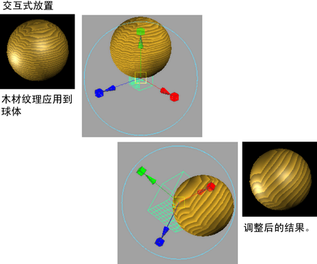
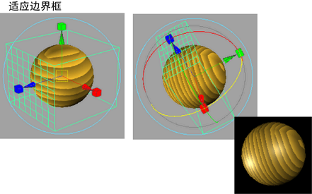

有关定位 place3dTexture 节点的纹理的详细信息，请参见 3D 纹理位置。
使用 3D 放置操纵器
- 指定 3D 纹理到曲面。
“Hypershade”中将出现该纹理的 place3dTexture 节点（样例），视图面板中将出现一个操纵器。
- 双击该节点打开“属性编辑器”(Attribute Editor)。
- 选择“交互式放置”(Interactive placement)（参见交互式放置）重新定位 3D 纹理以显示放置操纵器。（该工具类似于移动、缩放和旋转工具的组合版本。）
使用“适配到组边界框”(Fit to group bbox)选项
- 将一个 3D 纹理指定给曲面。
“Hypershade”中将出现该纹理的 place3dTexture 节点（样例），视图面板中将出现一个操纵器。
- 双击该节点打开“属性编辑器”(Attribute Editor)。
- 选择“适配到组边界框”(Fit to group bbox)以重新定位 3D 纹理。这使在必要时将 3D 纹理缩放、移动、旋转至指定对象的边界框。


提示：
此外，还可以使用 Maya 的变换工具来定位“适配到组边界框”(Fit to group bbox)操纵器。